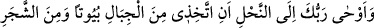
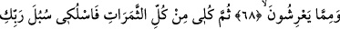
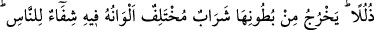
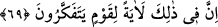

BAL ARISINA
İLHAM EDİLENLER
68. Rabbin bal arısına şöyle ilham etti: “Dağlardan, ağaçlardan ve insanların
yaptıkları çardaklardan kendine evler (kovanlar) edin.”
69. “Sonra meyvelerin her birinden ye ve Rabbinin sana kolay kıldığı yollarına
gir.” Onların karınlarından renkleri çeşitli bir şerbet (bal) çıkar ki, onda insanlar
için şifa vardır. Elbette bunda düşünen bir kavim için büyük bir ibret vardır.
Ey Muhammed, “Rabbin bal arısına şöyle ilham etti:” yâni onun kalbine koydu,
ancak kendisinin bileceği bir şekilde ona öğretti.
Bu âyet, “Çünkü Rabbin ona vahyetmiştir.” (ez-Zilzâl, 99/5) âyetinin benzeridir.
Her türlü gizli haber için “vahy” tâbiri kullanılır. Allah Teâlâ her hayvana faydasına
olacak şeyleri aramasını ve zararlarına olacak şeylerden kaçmasını ilham etmiştir.
Allah, Kâbil’e kardeşi Hâbil’in cesedini nasıl gömeceğini göstermek için yeri eşeleyen
bir karga göndermiştir (bk. el-Mâide, 5/31). Nitekim Mesnevî’de şöyle denilir:
Tırnaklarıyla yerden bir toz kopardı,
Yeri kazıp hemen ölü kargayı o mezara koydu;
Gömüp üstünü toprakla örttü...
Bu sûretle karga, Allah ilhamı ile bilgi sâhibi oldu.
Zeccâc der ki: “Allah, arının yaptığı balı insanlara karşılıksız verdiği/ihsân ettiği için
arıya “nahl” denilmiştir. Çünkü atıyye, ihsan demektir. Allah Teâlâ’nın: “Rabbin
bal arısına şöyle ilham etti” buyurması ona şeref olarak yeter.”
Acâibü’l-mahlûkât’ta şöyle der: “Ramazan bayramı gününe “rahmet günü” denir. O
gün Rabbin arıya bal yapma işini öğretmiştir.”
Hayâtü’l-hayevân’da der ki: “Bal helâl olsa da bal arısını yemek haramdır. Bal
arısını öldürmek mekruhtur. Arı kovanı içinde bal arısının tamamı görülüyorsa satışı ise
sahihtir. Aksi halde görülmeyenin (gâib) satışı olmuş olur. Arıyı uçarken satarsa et-
Tetimme’de belirtildiğine göre bu sahihtir. et-Tehzîb’de belirtildiğine göre ise sahih